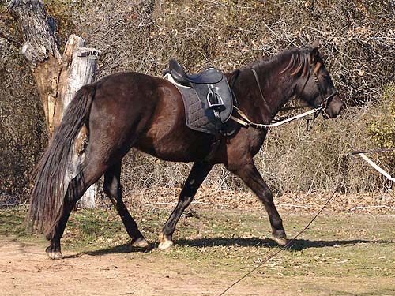

Working with Miaren The weather doesn't help
for getting
out and riding right now.
The last time I worked
Miaren was a few weeks ago.
He seems
to enjoy the attention and
work, so we did a
bit of lunging and then
I rode around a little.
We warmed up without
the side reins, but I attached them pretty quickly.

A bit of trotting both
directions. He wasn't fussy either direction today. He did get a little
bored with going in circles, but that's to be expected.
If I'm working with
him, he's happy and calm.
I'll probably tighten
the side reins the next time I work him. They really weren't effective
this loose.
He's always asking father
to play with him.
There's a difference
in height between him and my hunt mounts this year. Luckily I can still
stretch to reach a dressage length stirrup.
First on the line with
father.
Sometimes he'd get a
little too close to his handler.
He stood very nicely
for stirrup adjustments.
Off the lead, but still
near the groundperson.
Sometimes he was relaxed,
but most of the time he showed his nerves by chewing on the bit.
More chewing, but going
where I wanted.
Adding more leg and
asking for more forward. That got the ears back and an occassional head
toss. But, today was a good day, and I could continue with the leg and
not ask for help or feel worried.
He was bored with walking
around the little area. When I pointed him toward the pasture he'd feel
more forward and eager. Something for next time...
Practicing standing.
Any step forward got a correction. But there was no pawing or head tossing
about it.
He did relax into a
nice long walk.
If we ever hunted, I
bet everyone would be surprised to see me on a horse that wasn't my 'type'.
Probably most of all, me.
Usually bored and looking
for something to mess with. One thing hunting would do is give him a job.
I think at this stage he'd
just find dressage tedious. Now cross country would probably really hold
his interest.